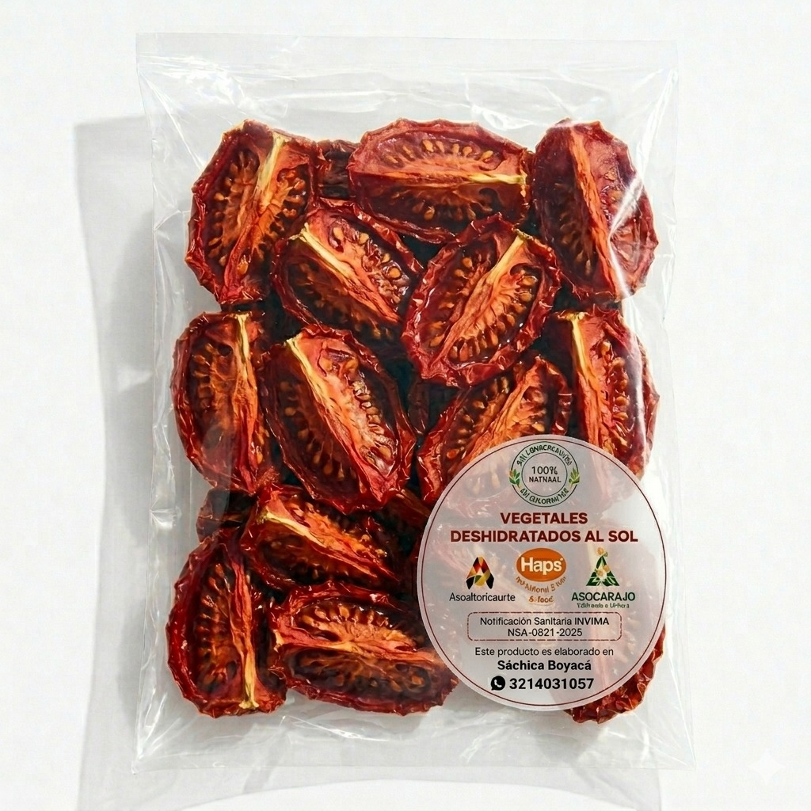
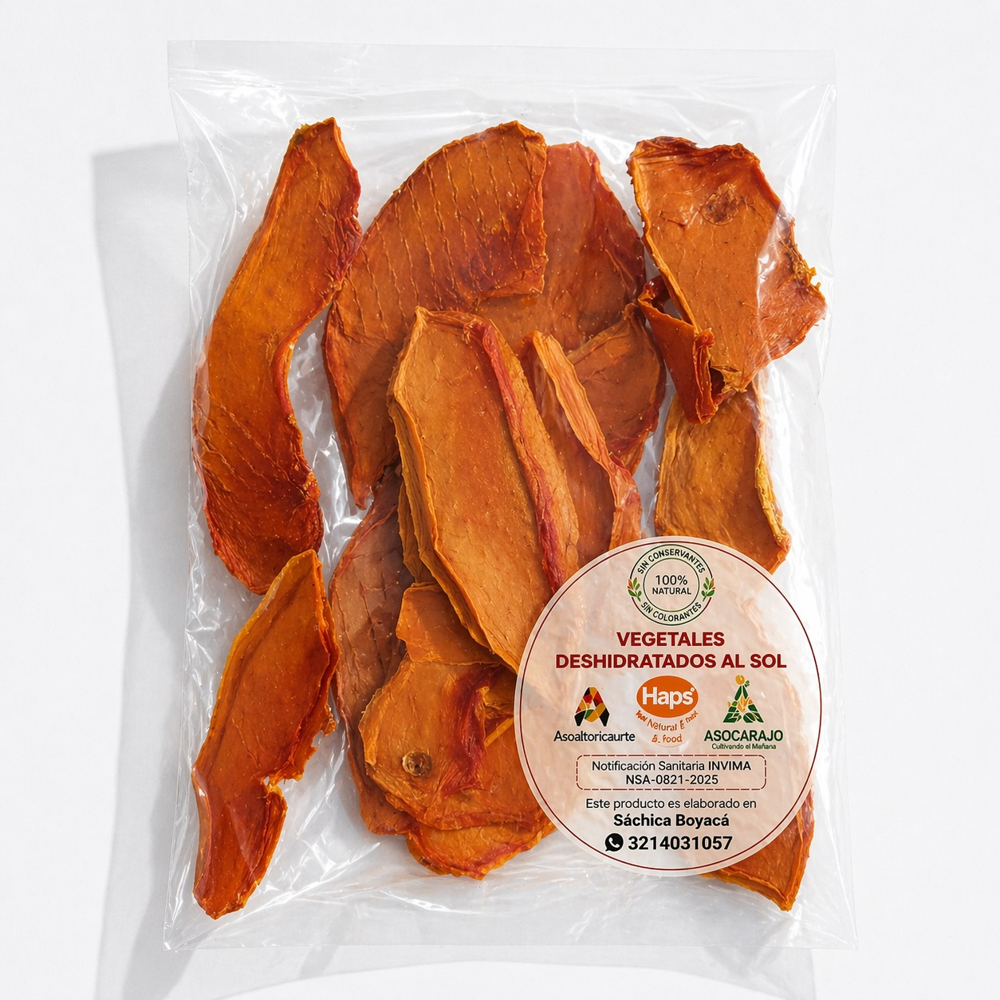
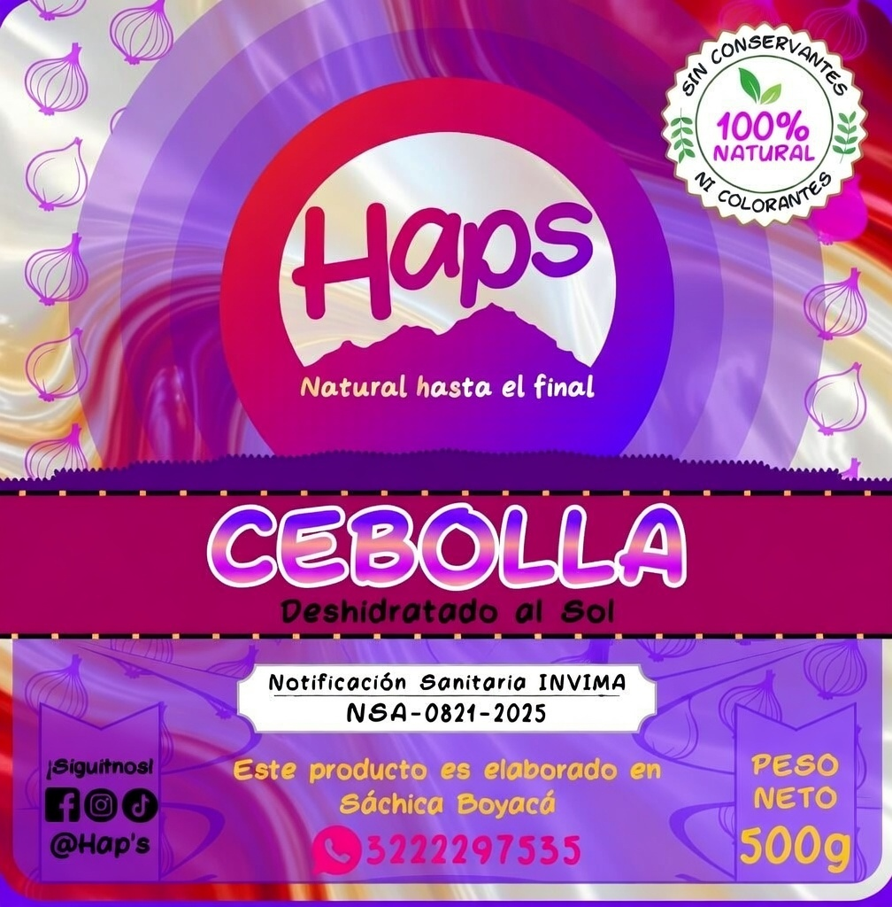
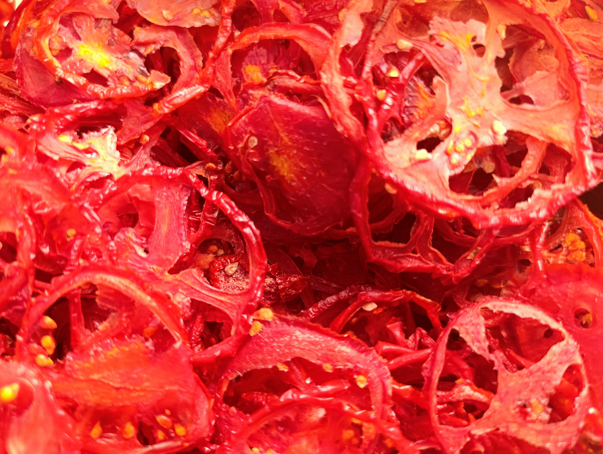
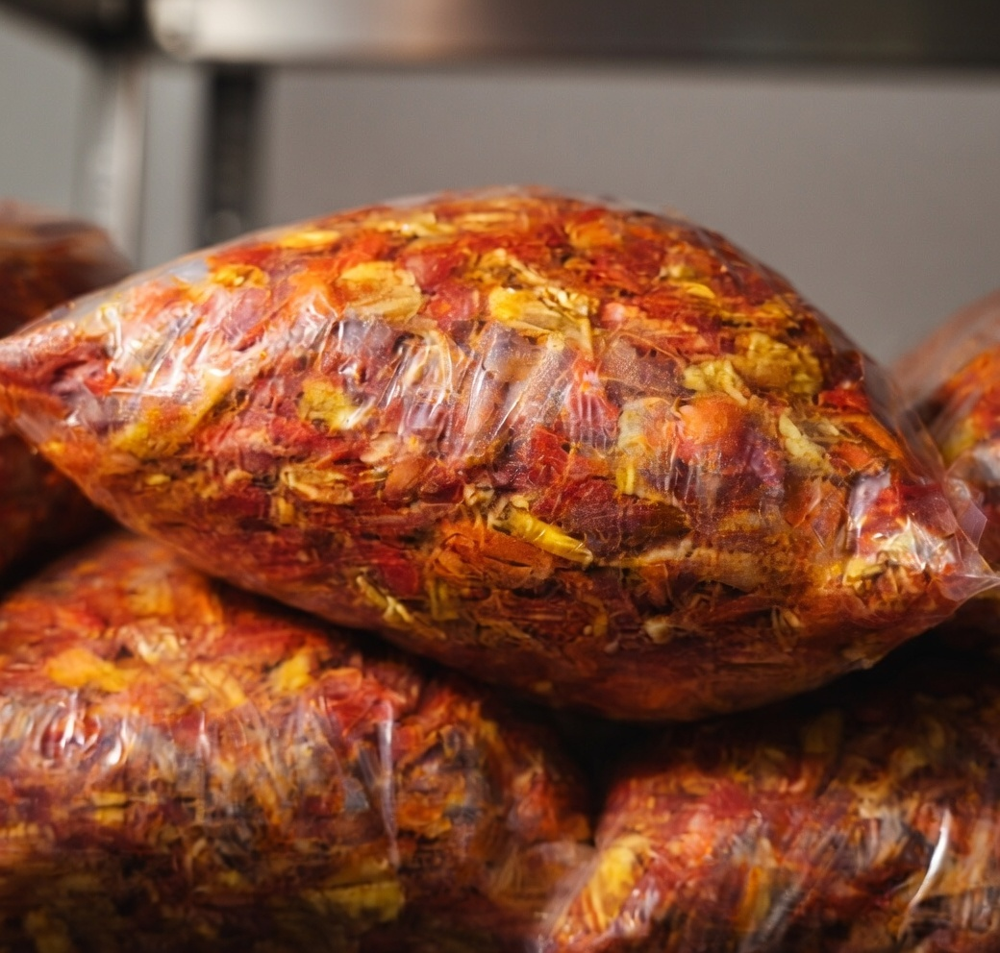
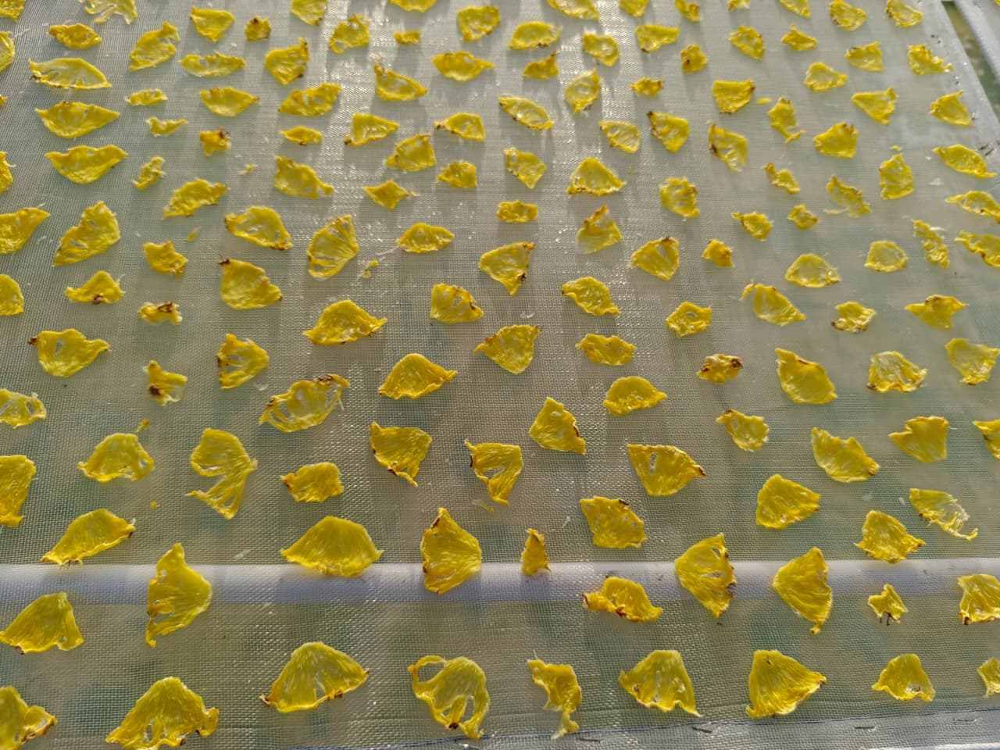
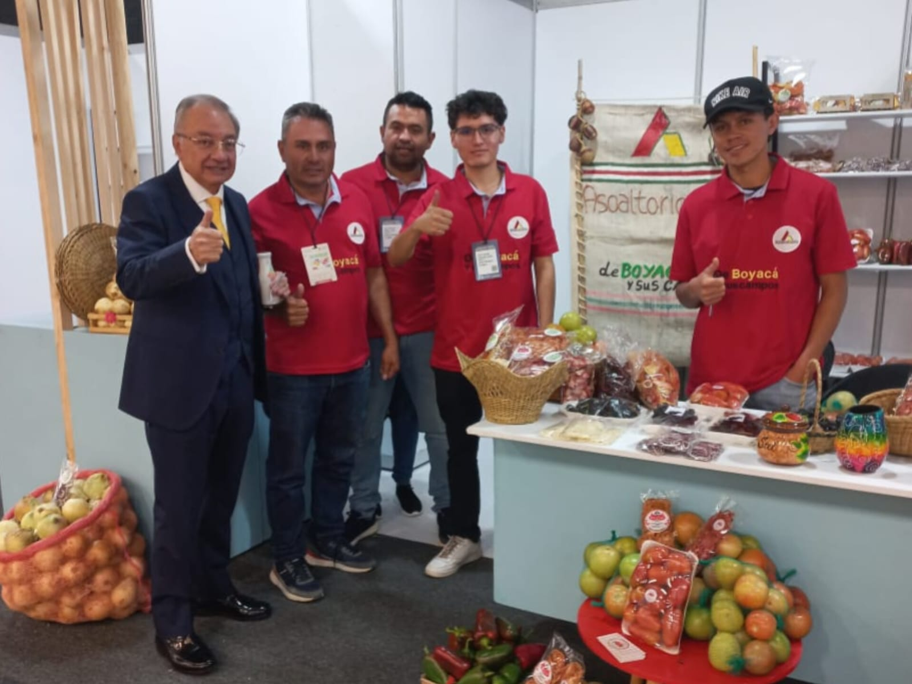
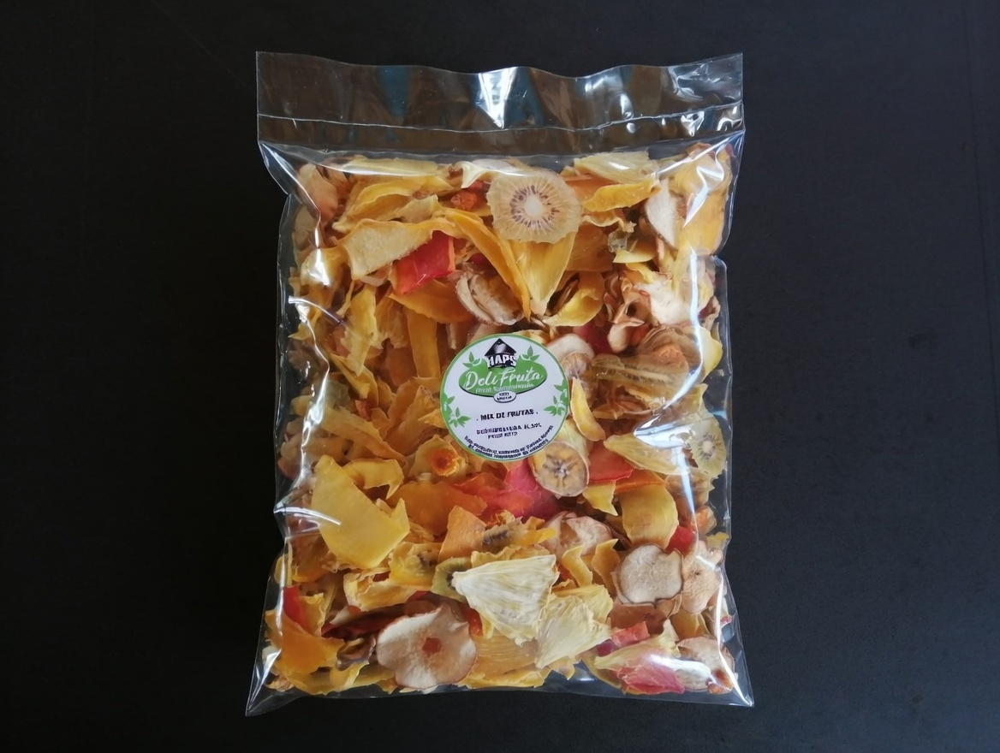

Nuestros Productos
Frutas y verduras seleccionadas y deshidratadas cuidadosamente.






Conservamos el sabor natural y los nutrientes con procesos controlados de alta calidad.
Frutas y verduras seleccionadas y deshidratadas cuidadosamente.




Elegimos fruta fresca de alta calidad.

Proceso técnico que conserva nutrientes y sabor.

Sellado hermético que mantiene frescura y duración.






"Disfrutar una fruta deshidratada Hap's es conectarse con lo auténtico, con un sabor limpio, natural y una textura que resalta lo mejor de cada fruto sin necesidad de añadidos."
"La calidad de la fruta se percibe desde el primer instante, ofreciendo un equilibrio perfecto entre sabor y frescura, como si estuvieras probando la fruta recién cosechada."
"Probar una fruta deshidratada de Hap's es una experiencia muy natural. Conserva sus sabores originales sin alteraciones y, al masticarla, libera una sensación jugosa en el paladar. Una forma auténtica de disfrutar la fruta en su estado más puro."
1. Uso del sitio: Este sitio web presenta información sobre los productos deshidratados de la marca Haps. El contenido es solo informativo.
2. Productos: Nuestros productos son elaborados con ingredientes naturales mediante procesos de deshidratación que conservan su sabor y propiedades.
3. Propiedad de la marca: El nombre, logotipo y diseño de la marca Haps son propiedad de sus creadores y no pueden ser utilizados sin autorización.
4. Información del producto: Las imágenes y descripciones de los productos son representaciones referenciales.
5. Uso del contenido: El contenido de este sitio no puede ser copiado o reproducido sin autorización de la marca.
6. Contacto: Para dudas o información adicional sobre nuestros productos, puede comunicarse con nuestro equipo.